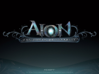
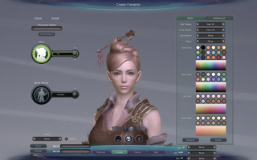
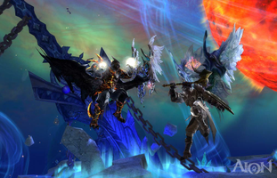
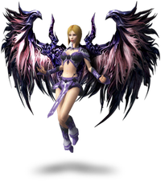

Aion
Archivierte Anleitung
Dieser Artikel wurde archiviert, da er - oder Teile daraus - nur noch unter einer älteren Ubuntu-Version nutzbar ist. Diese Anleitung wird vom Wiki-Team weder auf Richtigkeit überprüft noch anderweitig gepflegt. Zusätzlich wurde der Artikel für weitere Änderungen gesperrt.
Zum Verständnis dieses Artikels sind folgende Seiten hilfreich:

Aion ist ein MMOPRG aus dem Hause NcSoft  und wird seit Anfang 2012 für den europäischen Markt von GameForge angeboten.
und wird seit Anfang 2012 für den europäischen Markt von GameForge angeboten.
Atreia ist die Welt in der Aion spielt. Nur das Innere seiner Hemisphären ist bewohnt, die Außenseite ist verwüstet. Auf der unteren, blühenden Hemisphäre wohnen die Elyos, während die Asmodier auf der kalten oberen Hemisphäre beheimatet sind. Zwischen den Hemisphären, wo einst der Turm der Ewigkeit stand, befindet sich nun das Abyss. Allein die beiden Überreste des Turms - der Turm der Finsternis und der Turm des Lichts - halten die Welt noch zusammen. Doch wird diese Hoffnung durch den Krieg zwischen den Elyos und den Asmodiern - mit dem Ziel der Vernichtung des gegnerischen Turms - bedroht.
Dieses Spiel kann mit Hilfe von Wine (WineHQ) unter Linux verwendet werden.
|  |  |
| Hauptmenü | Spieleszene |
Vorbereitung¶
Zur Vorbereitung muss Wine mit einigen seiner Erweiterungen installiert werden. Der Author versuchte die Wine Versionen 1.3 (Distribution Default), 1.4.1 (Latest Stable Release) und 1.5.5 (Beta) und konnte keine markanten Unterschiede in Leistung und (In)Stabilität beobachten. Am einfachsten wäre also die Verwendung der Defaultversion der Distribution, also zur Zeit der Erfassung dieses Artikels Version 1.3. Mit der Wine-Installation ist auch das Werkzeug 'winetricks' verfügbar, mit dem einige Erweiterungen installiert werden müssen. Dazu folgenden Befehl in einer Linuxconsole [2] absetzen.
winetricks d3dx9 vcrun2005 dotnet20
Installation von Aion¶
Mittels winecfg (Wine Konfigurationsoberfläche) die Grafik auf 1024x768 stellen. Wine darf bei der oben genannten Systemkonfiguration nicht auf Vollbild laufen, sonst bekommt später DirectX Probleme, Texturen anzulegen (wegen ungenügenden Speichers) und der Client würde abstürzen (zumindest war dies die Erfahrung des Authors). Die Auflösung kann später experimentell an eigene Bedürnisse angepasst werden.
Das Aion Client Setup Programm mit Wine starten, nachdem die oben beschriebenen Pakete wie directX, .net2.0 etc. mittels winetricks installiert wurden.
Während des Setups erscheint eine Dialogbox mit der Frage, ob .Net 2.0 installiert werden soll. Sie kann mit 'Nein' beantworted werden, da .Net 2.0 bereits installiert sein sollte (siehe oben).
Der Launcher sollte kurz darauf erscheinen und man hat die Wahl den Client herunterzuladen, dies kann etwas länger dauern, denn rund 17 Gigabytes brauchten ihre Zeit bei den meisten Internetverbindungen.
4.1. Alternativ kann man auch eine vorhandene Kopie des Clients einfach in dem entsprechenden Verzeichnis erstellen. Bei Verwendung des Default WinePrefix und Default Aion Installtionsordner wäre das dieser Pfad: "~/.wine/drive_c/Program Files/Gameforge/AION Free-To-Play".
4.2. ACHTUNG: Auch wenn der Client selbst von einer vorhandenen Maschine kopiert werden kann, muss der Launcher wirklich durch das von GameForge zur Verfügung gestellte Setup-Programm installiert werden. Ein simples Kopieren des Launcher-Verzeichnises ist nicht ausreichend, da die nötigen Windows-Registry Informationen fehlen würden. Diese von einer Windows-Installation zu importieren kostet vermutlich mehr Zeit als einfach den Launcher mit Wine zu installieren.
5. Nun kommt das Problem mit Starten des Launchers. Das Problem mit dem Start liegt an der unpassenden Art und Weise wie wine die Programmparameter (insbesondere, wenn sie Anführungszeichen besitzen) weiterreicht. Deswegen bekommt der Launcher eine falsche Update Adresse und bemängelt diese auch. Es hilft auch nicht Escape-Zeichen für die Anführungszeichen zu verwenden, also sowas in der Linux Shell zu versuchen, funktioniert NICHT:
wine ./NCLauncher/NCLauncher.exe /LauncherID:\"GameForge\" /CompanyID:\"11\" /GameID:\"AION-LIVE\" /LUpdateAddr:\"update.aion.gfsrv.net\"
Man beachte das Escape-Zeichen hier: \"update.aion.gfsrv.net\". Obwohl die Shell das richtig verarbeiten würde, scheinen die Anführungszeichen von Wine falsch an den Launcher weitergeleitet zu werden. Also weiterlesen, die Lösung folgt gleich.
5.1. Eine Datei im Verzeichnis ~/.wine/drive_c/Program Files/Gameforge erstellen [4] namens run.bat
5.2. In der Datei run.bat folgendes schreiben [4] und die Datei speichern:
./NCLauncher/NCLauncher.exe /LauncherID:"GameForge" /CompanyID:"11" /GameID:"AION-LIVE" /LUpdateAddr:"update.aion.gfsrv.net"
6. Nun im Verzeichnis ~/.wine/drive_c/Program Files/Gameforge folgendes ausführen [3]: wine start ./run.bat
Jetzt sollte der Launcher auch starten und seine Arbeit wie auch unter Windows verrichten (z.B. den Client aktualisieren). Optional kann dieser Schritt auch durch ein eingenes Bash-Script automatisiert werden und auf dem Desktop ein Link darauf erstellt werden.

Infobox¶
| Aion | |
| Genre: | Massively Multiplayer Online Role-Playing Game |
| Sprache: | |
| Veröffentlichung: | 2009 |
| Publisher: | Gameforge 4D  |
| Systemvoraussetzungen: | 2,8-GHz+ Prozessor / 1 GB+ RAM / Nvidia 5900 Ultra, ATI Radeon x700 / 30 GB Festplattenspeicher |
| Medien: | Download |
| Strichcode / EAN / GTIN: | - |
| Läuft mit: | Wine |

- Erstellt mit Inyoka
-
 2004 – 2017 ubuntuusers.de • Einige Rechte vorbehalten
2004 – 2017 ubuntuusers.de • Einige Rechte vorbehalten
Lizenz • Kontakt • Datenschutz • Impressum • Serverstatus -
Serverhousing gespendet von